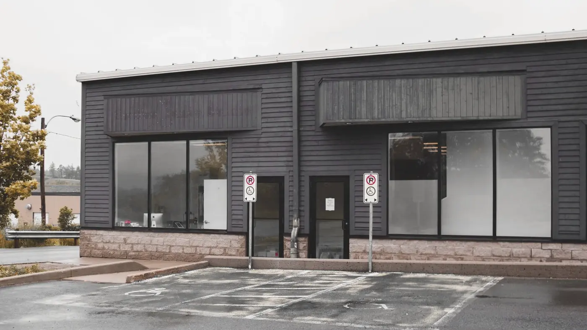

Accessibility
What the building is like, so that you can decide before you travel. If something you need isn’t listed here, please ask.
Getting in
Is the entry step-free?
Yes. The front entrance on Pruett Street is level with the sidewalk and the parking lot, and the door is 36 inches wide.
Is there parking?
Yes, a free lot in front of the building, with two accessible spaces closest to the door.
Public transportation
The Route 9 bus stops at Pruett and Mill, about two minutes’ walk on a level sidewalk.
Is there an elevator?
Yes, to the second floor. Rooms 1 to 4 are on the first floor and Rooms 5 to 8 are on the second. If you can’t use stairs and the elevator is out, your therapist will move to a first-floor room.
How wide are the doors?
Every consulting room door is at least 34 inches wide.
Is there an accessible restroom?
Yes, one on each floor, with grab rails and a turning space.

Waiting
Is there a quiet waiting space?
Yes. There is a small room beside the main waiting room with one chair, so you don’t have to sit facing other people. Ask for it when you book.
Can I wait outside or in my car and be called?
Yes. Text the office when you arrive, and your therapist will call or text you when they’re ready.
Who should I call ahead?
The intake coordinator, on (610) 555-0147, Monday to Friday, 9 a.m. to 5 p.m. You don’t need to give a reason.
Can I bring someone?
Yes. They can wait in the waiting room, or sit in on the session if you and your therapist agree.
This website
We have tried to build this site so that it works with a keyboard and a screen reader, at 200% zoom, and without JavaScript. If something doesn’t work for you, please tell the intake coordinator.